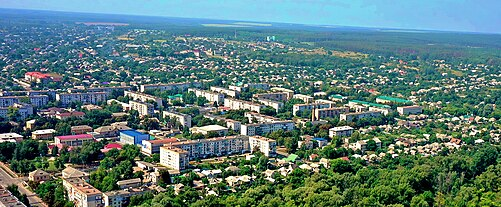

Економіка.
Кремінна відзначається нетиповою для більшості слобожанських міст структурою виробництва. Місто має значний потенціал у переробній, харчовій, будівельній і добувній (надра міста багаті на природний газ та вугілля) промисловості. Чудові рекреаційні можливості створюють гарні умови для розвитку туризму та спорту. Агропромисловий комплекс у нових умовах економіки має значний потенціал до завоювання ринку, адже місто славиться своїми чорноземами.
Раніше здійснювали видобуток кам'яного вугілля (Шахта № 1 і «Східна»), існувала меблева фабрика, фабрика баянів (1929—1997 р.), завод «Кремінмаш».
Натепер працюють завод «Хімавтоматика», пивзавод «Пінта», молочний завод, лісозаготівельні та деревообробні цехи, звірогосподарство. На території району ведеться видобуток природного газу.
До складу ДП «Кремінське ЛМГ» входять 9 лісництв: Боровенське, Веригінське, Житлівське, Комсомольське, Кудряшівське, Новокраснянське, Серебрянське, Сіточне, Старокраснянське. Ліси багаті на кабанів, козуль, є олені та лосі. Полювання з початку війни заборонене.
У 1932 році в Кремінському лісі був створений національний заповідник. У той час тут розводили нутрію, норку, ласку; також завезли до заповідника оленів, сарн і лосів. Зараз у Кремінній є звіроферма.
Багата сировинна база (деревина, вугілля, природний газ), наявність великих площ чорнозему. Загалом, місто має значний потенціал, насамперед, у харчовій, переробній промисловості, а також у сфері туризму й відпочинку.
 Назад